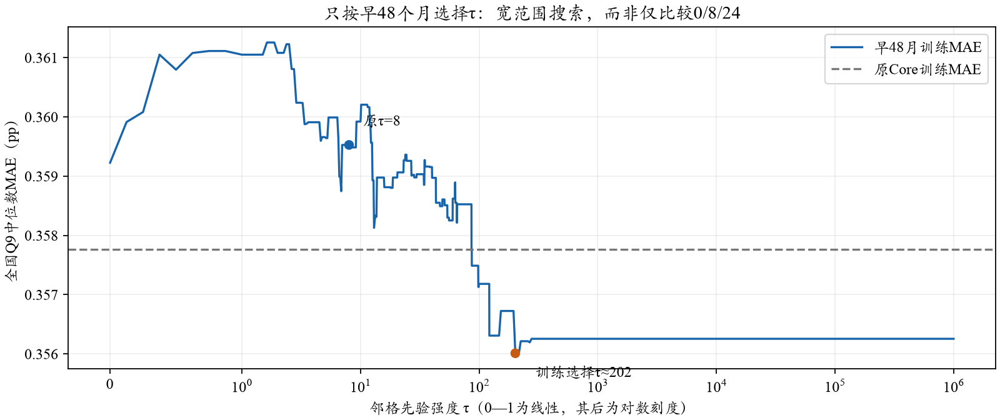
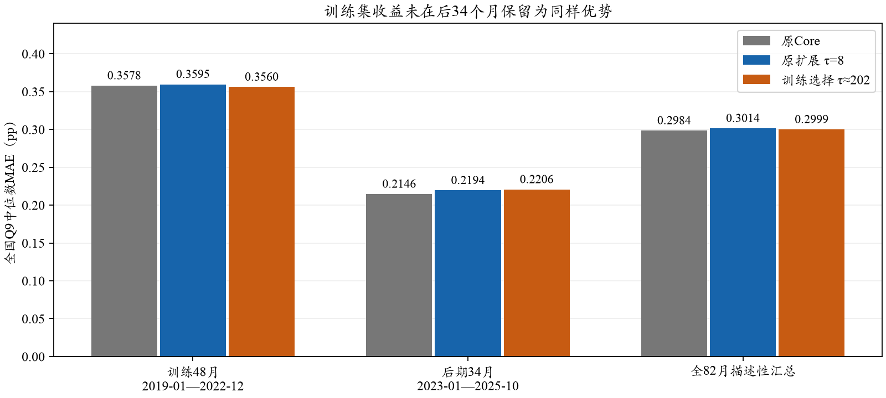

SCE · 原结果保留 · 离线监督校准敏感性 · 0 API / 0 新密度拟合
τ不必限制在0、8、24；扩大搜索后，全期MAE约为0.30pp
早48月按真人全国指标训练，扫描1,681个τ取值并局部细搜，选得τ≈202。全期MAE从原扩展的0.3014降到0.2999pp；仍高于原Core的0.2984pp。后34月并未显示优于原扩展，不能以跨过0.3作为采用理由。
1．为什么此前只选三个值？
0代表同格有供体时不收缩，8和24是适度与较强收缩的粗网格；它们不是经济学或认知理论给定的常数。原τ=8按被遮蔽的LLM回答选参，本页则使用早期真人全国指标，属于另一种监督校准，不能覆盖原选择记录。

来源：冻结A82 Core＋Normal人口/答卷；训练目标仅2019-01—2022-12公开SCE全国Q9。候选0—128间隔0.125、128—1,000,000对数网格、无穷极限，加两轮训练内局部细搜。最小值不是唯一参数点；有402个已扫描τ并列。没有严格全局最优证明。
2．按同一训练划分比较
| 配置 | 训练48月 MAE（pp） | 后34月 MAE（pp） | 全82月 MAE（pp） |
|---|
| 原Core | 0.3578 | 0.2146 | 0.2984 |
|---|
| 扩展 τ=0 | 0.3592 | 0.2175 | 0.3005 |
|---|
| 原扩展 τ=8 | 0.3595 | 0.2194 | 0.3014 |
|---|
| 扩展 τ=24 | 0.3594 | 0.2227 | 0.3027 |
|---|
| 训练选择 τ≈202 | 0.3560 | 0.2206 | 0.2999 |
|---|
| 完全采用邻格的极限 | 0.3563 | 0.2208 | 0.3001 |
|---|

纵轴从0开始；三组严格相同月份和全国目标。后34月早已参与项目探索，因此仅称后期检查，不称新的盲测。
3．结果意味着什么？
训练MAE从原Core的0.3578降到0.3560pp，收益很小；后34月则由0.2146变为0.2206pp。相对原扩展τ8，训练MAE降低0.0035pp，后期MAE增加0.0012pp。τ≈202意味着Normal更依赖邻格，而非该值精确识别了认知机制；Core回答仍保留。2021年MAE为0.5391pp，但仍不能替代全期与后期评价。
呈现上可以写“约0.30pp，扩展前后变化+0.003pp（约1%）”，同时披露精确值。0.3不是预先规定的研究成功阈值，不能仅为首位数字选参。原τ8及原报告不变，本页是额外敏感性分析，不自动切换配置。
原Core＋Normal结果 · 方法与复算
预测/调参阶段不重新生成模型回答；选择先封存，再读取后期目标。参数搜索仅改τ、没有改变54格、入组池、供体选择或权重。完整数值与训练搜索见 outputs/sce_full_a_core_normal_tau_20261026_v1。